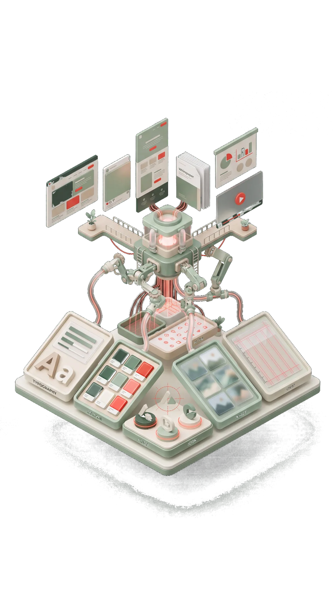
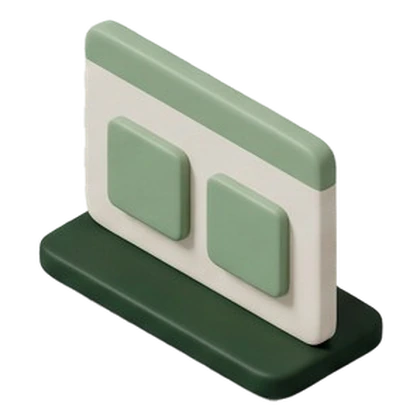
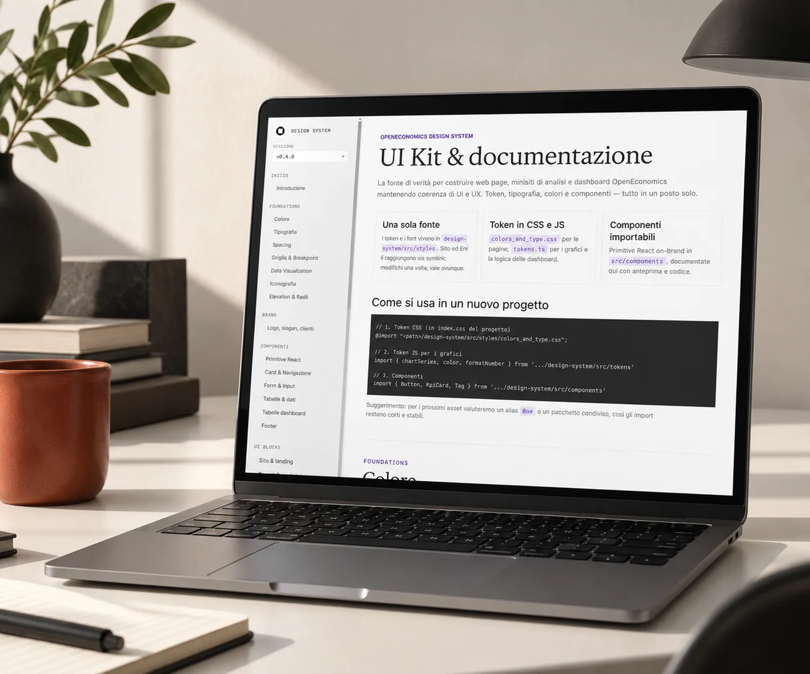
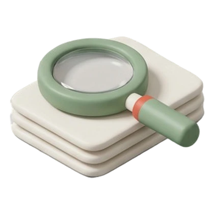
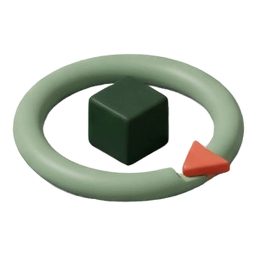

Level 01
Level 01
The basic decisions
Foundations
- Colours and tonal scales
- Typography and hierarchy
- Spacing and grids
- Icons and charts

I take the identity you already have and turn it into the context your team and AI use to produce. The rules move out of a document and into the files the work is made from.
Already in production
OpenEconomics works this way every week. Presentations, reports, PDFs and web pages come out of the library, produced by the marketing team. A whole video came out of it too, without editing software.
See how it's built ↗The problem
Not everyone starts from the same place. Some have an identity that is coming apart; others have a solid one but can't use it at the speed today requires. The system works for both.
Every presentation starts from the file of another presentation, which in turn was adapted from yet another one.
The website, the sales slides and the LinkedIn profile look like they belong to three different companies.
Changing a colour in a template means going back to the original file, every time.
Someone in the company has started generating images and copy with AI. And it shows.
The brand book exists, but nobody has opened it since it was delivered.
Design requests pile up, and meanwhile marketing slows down waiting for materials.
Recurring production has grown: new presentations, PDFs and pages every week, with the same decisions to repeat by hand each time.
The marketing team could handle repetitive materials on its own, if it had a tool that let it do so while staying on brand.
It isn't a matter of taste, and often not even of organisation. The rule exists, but it isn't where the work happens: it sits in a document while the work happens elsewhere — so every new piece starts from scratch.
Why it happens
The brand decisions already exist, and they are usually well written: they live in the brand book, the guidelines, the templates, the materials already approved. The point is that they stay there, in separate documents, while the work happens somewhere else.
Someone putting a presentation together in a hurry picks the blue from a screenshot, because it's quicker than looking up the exact code. The documentation wasn't wrong: it just wasn't there when it was needed.
In a system, colours are values the files read on their own. Components are ready-made blocks with the correct spacing built in. Page templates already exist, and whoever uses them starts from there.
And artificial intelligence receives the same decisions in a form it can apply: named rules, good examples and rejected ones.
How it's built
Each level rests on the one below. Change a value at the top and everything that uses it updates, with nothing redone by hand.
Foundations
Components

Level 03UI Blocks
The delivery
At the end of the project, this is what you keep, in a repository of your own, in formats any developer or designer can open.
A library that opens in the browser, where every element has a live preview and code to copy.
Colours, fonts and spacing as values the files read, instead of screenshots to sample by eye.
Components and finished pages for website, reports and dashboards, ready to fill.
The written context that artificial intelligence reads before producing anything.
A rubric for judging a result, written so that non-designers can use it too.
The archive of approved and rejected examples, each with the reason for the decision.
Usage documentation: when to use a component, how to combine it, which exceptions to avoid.
Explore the case studies
A real case, from start to finish: the audit of existing material, the system architecture, quality control and the finished outputs.

Case 01 · Economic analysis and advisory
An already solid identity — brochures, presentations, reports and digital products built over time — set up so the marketing team can use it without going through me. Today that system produces presentations, PDFs, web pages, reports and a whole video made without editing software.
Read the case study ↗Want to see the system applied to your industry? Contact me.
Quality
A model that produces quickly also makes mistakes quickly. That's why I don't deliver only the rules: I define how a result is judged before it reaches a client. The judgement is written down, so it doesn't depend on the memory of whoever was there.
Colours, spacing and components are values and constraints, not suggestions. Anything that falls outside the system shows up immediately, and is fixed at the source instead of in every single file.
Hierarchy, legibility, balance, data treatment. Every result is assessed on named criteria rather than impressions. The same criteria apply to me, to your team and to the AI.
Approved and discarded examples are kept together with the reason. That's how the system learns to tell what is correct from what is good.
How we work
None of the three commits you to the next. If you decide not to continue after the audit, the document you have is still useful.
I start from the material you have: brand book, website, presentations, reports. I draw out the rules you already follow without having written them down, and turn them into a system the team can use. This is the most common path.
I design the visual language and build it as a working system from the start. This applies to a new product, a spin-off or a rebrand: the tools are created together with the identity, instead of arriving years later.

Step 01 · DiagnosisTwo to three weeks
I look at all the material you already have and tell you what can be systematised, what needs redoing and what is best left as it is.
What I need from youAccess to the files and two hours with whoever knows the brand best.
Six to ten weeks
I build the library everything starts from, and the instructions artificial intelligence reads before producing, so it works within your rules.
What I need from youOne point of contact and about an hour a week for reviews.

Step 03 · ContinuityMonthly retainer
A system that stands still ages. Every month new formats come in, the archive of choices is updated and the team's production stays under control.
What I need from youYour requests, as they come. No fixed meetings.
Inside the three steps: the five phases of the method
Good to know
Timings depend on how much material already exists and are set after the audit. Bespoke creative work, such as campaigns and one-off projects, stays outside the retainer and is quoted separately: the system frees up time for that work and doesn't replace it.
Who it's for
For agencies
The system adds to the identity projects you already do, and extends what you deliver without new hires. The client stays yours: I come in as a specialist, in whatever set-up we agree on together.
The identity you deliver becomes a system the client uses every day, and the scope of the project grows.
An identity made years ago becomes a concrete reason to reopen the conversation, without waiting for the next rebrand.
Maintaining and evolving the system creates continuity, replacing the repetitive work that eats into margins.
Questions
A brand book describes, and it will still be needed: it becomes the source the work starts from. What it can't do is prevent mistakes while someone is working in a hurry. The system can, because the rule lives inside the files that generate the materials.
It's the first thing people try; I did too. But the model reads a document designed to be looked at by a person: it guesses the colours from the images instead of having the exact values, and it weighs the example pages like everything else. From the third piece onwards it starts going its own way. What you need is the same content rewritten in a form a machine reads without interpreting: declared values, ready-made components, examples judged one by one.
It doesn't need to be. Whoever produces content opens a library and a back office: picks a block, writes, publishes. The code sits underneath and concerns me and the developers.
Yes, when it works without constraints, which is what happens today in half the companies that use it. Here it receives named rules, correct examples, rejected examples and assessment criteria. We decide the direction; it applies it.
The system lives in your repository, not mine. The files you send me stay in a shared folder that you close at the end, and I sign a non-disclosure agreement if needed. As for models: we use the ones your company has already approved, with settings that exclude training on your data. If your legal team has specific constraints, we review them before the audit so they don't become a problem halfway through.
It depends on how much material exists and how many formats need to go into the system, so any figure before I've seen your files would be made up. The audit is the smallest step and exists precisely for this: at the end you have a real number and you're free to stop.
Two hours during the audit, about an hour a week during setup. After that, only the time to send me your requests. Most of the work stays on my side.
The system is yours. Values, components, documentation and archive stay in your repository, in open formats any studio can pick up. The retainer is renewed because it's useful; you are never locked in.
About me
I'm Alessio Granella, brand and graphic designer. Before working as an outside consultant I spent ten years inside a software company: I saw first-hand how presentations drifted apart and templates went un-updated.
Today I work with marketing departments and companies that need to communicate every week.
Since artificial intelligence entered production, I no longer deliver just files. I build the system that lets you produce more without me, and I teach that system to recognise when a result isn't good enough.
By your side, every step of the way.
Let's start
Half an hour, no commitment. We look together at what you produce today and where time gets lost. If the system isn't the right answer for you, I'll tell you on the same call.
I've received your message. I'll reply within one working day, from this address: info@alessiogranella.com.
Not the right time for a call? Send me your website link and I'll reply with a couple of lines on what I would systematise first. You don't need to prepare anything.
Send me the link ↗ Level 02
Level 02
 Step 02 · Build
Step 02 · Build